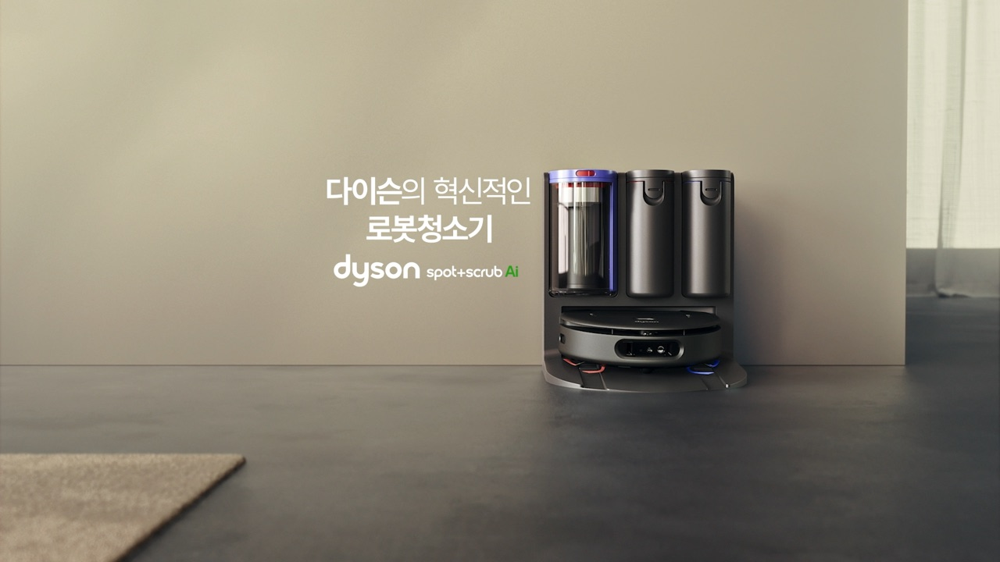
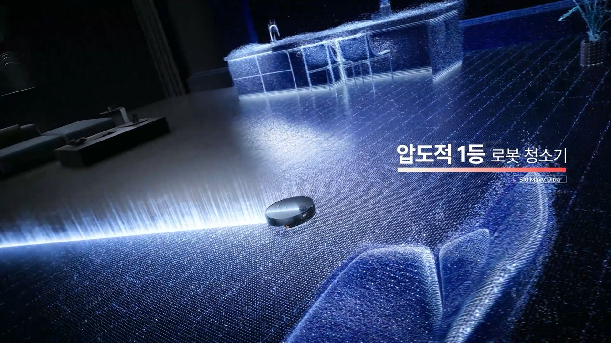
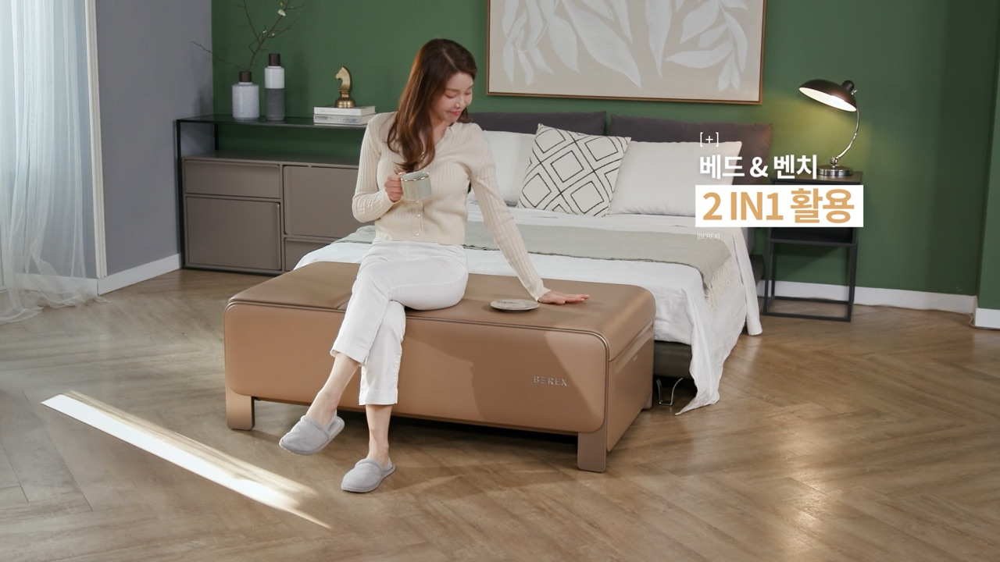
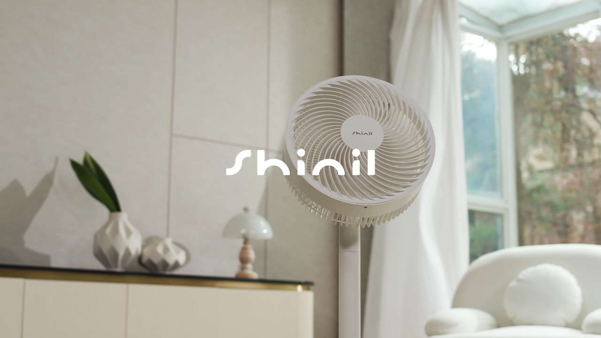
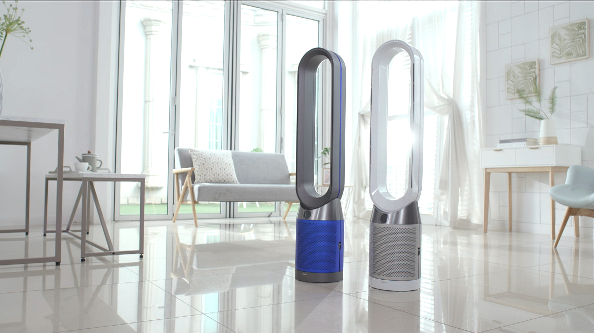

문제 상황 제시
먼지, 냄새, 물때, 습기, 계절 불편처럼 고객이 이미 느끼는 문제를 첫 장면에서 명확히 보여줍니다.
청소기, 로봇청소기, 정수기, 공기청정기, 계절가전, 렌탈 생활가전까지. 제품의 편의성과 사용 전후 차이를 홈쇼핑 방송 흐름에 맞춘 인서트 영상으로 설계합니다.
마이다스는 생활가전의 성능, 자동화, 편의성, 공간 변화가 방송 중 바로 이해되도록 실연 장면과 비교 장면을 구성합니다.
홈쇼핑·세일즈 영상 제작 경험
전 홈쇼핑 17개 채널 경험
일산 종합촬영센터 기반 촬영
기획, 촬영, 편집, CG, 숏폼 재가공
흡입력, 자동화, 위생, 렌탈 혜택 같은 메시지는 말로만 설명하면 길어집니다. 인서트 영상에서는 사용 장면, 전후 비교, 디테일 컷으로 빠르게 설득합니다.
먼지, 냄새, 물때, 습기, 계절 불편처럼 고객이 이미 느끼는 문제를 첫 장면에서 명확히 보여줍니다.
흡입, 세척, 정수, 살균, 자동 복귀, 앱 연동 등 핵심 기능을 실제 작동 장면으로 구성합니다.
기존 방식과 제품 사용 후 결과를 같은 화면 기준으로 보여줘 차이를 직관적으로 만듭니다.
성능, 편의성, 구성, 렌탈 조건, 브랜드 신뢰 요소를 마지막에 묶어 방송 전환을 돕습니다.
제품군에 따라 고객이 확인하고 싶은 포인트가 다릅니다. 촬영 전 구성안 단계에서 필요한 실연, 세트, 그래픽 범위를 먼저 정리합니다.
먼지 흡입, 바닥 환경, 장애물, 자동화 기능, 청소 전후 차이를 중심으로 구성합니다.
위생, 관리 편의성, 설치 공간, 가족 사용 장면, 렌탈 혜택을 자연스럽게 연결합니다.
공간 변화, 설치 전후, 계절 문제, 실내 환경 개선 메시지를 그래픽과 함께 보여줍니다.
더위, 추위, 습기, 건조함처럼 시즌 수요가 생기는 순간을 구매 이유로 전환합니다.
사용 자세, 편안함, 가족 사용 장면, 공간 배치까지 생활감 있는 장면으로 전달합니다.
제품 크기, 설치 공간, 이동 동선, 디테일 컷을 촬영센터 세트에서 안정적으로 확보합니다.
앱 제어, 자동화, 센서 작동, 상태 표시를 화면 그래픽과 실제 작동 컷으로 설명합니다.
기능별 후킹 컷을 뽑아 쇼츠, 릴스, SNS 광고 소재로 다시 편집합니다.
공개 가능한 영상은 성공사례 페이지에서 확인할 수 있습니다. 비공개 샘플은 제품군과 판매 채널을 알려주시면 상담 시 맞춰 공유드립니다.

프리미엄 사용 경험과 성능 체감을 홈쇼핑 인서트 문법으로 구성
생활가전 · 제품 실연
청소 성능, 자동화, 바닥 환경별 테스트 장면을 직관적으로 표현
로봇청소기 · 홈쇼핑 인서트
정수기, 비데, 매트리스 등 렌탈 생활가전을 생활 장면 중심으로 구성
렌탈 생활가전 · 리빙 세트
계절 수요와 사용 편의성을 방송 중 구매 이유로 연결
계절가전 · 홈쇼핑 인서트
설치상품의 이해도와 사용 환경을 라이브커머스·숏폼으로 확장
설치상품 · 생활가전일산 3,000평 마이다스종합촬영센터에서 거실, 주방, 욕실, 정원, 호리존, 라이브 방송 공간까지 제품군에 맞는 촬영 환경을 연결합니다.

생활가전은 실연 준비가 결과를 좌우합니다. 촬영 전 테스트 장면, 세트, 소품, 그래픽 범위를 먼저 정리해 현장에서 필요한 컷을 빠짐없이 확보합니다.
제품 기능, 사용 조건, 시험자료, 인증, 경쟁 제품, 판매 채널을 확인합니다.
문제 상황, 작동 컷, 비교 컷, 사용 전후 장면, 그래픽 포인트를 설계합니다.
거실, 주방, 욕실, 설치 공간 등 제품군에 맞는 촬영 환경을 준비합니다.
모델 동선, 제품 디테일, 기능 실연, 테스트 장면, 브랜드 컷을 촬영합니다.
쇼호스트 멘트와 방송 흐름에 맞춰 자막, CG, 사운드, 색보정을 진행합니다.
TV홈쇼핑, 온라인 상세페이지, 유튜브, 쇼츠·릴스용 파일로 정리합니다.
정확한 견적은 촬영 일수, 모델·세트·그래픽 범위, 납품 채널에 따라 달라집니다. 예산대와 일정에 맞춰 가장 효율적인 구성을 제안드립니다.
생활가전은 방송 이후에도 상세페이지, 광고, SNS, 영업 자료에서 반복적으로 쓰입니다. 촬영 단계부터 2차 활용을 염두에 두고 컷을 확보합니다.
방송 중 기능과 구매 이유를 빠르게 전달하는 메인 인서트 영상
제품 기능, 사용 전후, 디테일 컷을 온라인 판매 페이지에 맞춰 활용
핵심 기능별 후킹 컷을 중심으로 짧은 광고 버전 제작
세로형 숏폼, SNS, 라이브커머스 예고 콘텐츠로 재편집
제품 정보가 완벽히 정리되지 않아도 괜찮습니다. 우선 제품군, 판매 채널, 희망 일정만 알려주셔도 제작 범위를 함께 잡아드립니다.
소형 제품이나 실연 범위가 명확한 경우 1일 촬영으로 가능한 경우가 많습니다. 대형 제품, 설치 장면, 모델 컷, 세트 이동이 많으면 추가 촬영일이 필요할 수 있습니다.
가능합니다. 제품 특성과 판매 채널에 맞춰 흡입, 세척, 정수, 살균, 자동화, 설치 전후 등 보여줘야 할 테스트 장면을 구성안에 반영합니다.
정수기, 비데, 매트리스, 안마의자 등 렌탈 생활가전은 제품 경험과 계약 혜택을 함께 이해시키는 흐름으로 구성합니다.
가능합니다. 홈쇼핑 인서트 촬영 소스를 바탕으로 쇼츠, 릴스, 유튜브, 상세페이지용 버전을 함께 제작할 수 있습니다.
생활가전 인서트는 라이브커머스, 숏폼, 촬영센터 활용과 함께 진행하면 콘텐츠 활용도가 더 커집니다.
제품군, 판매 채널, 예산, 일정이 정해져 있지 않아도 괜찮습니다. 현재 상황을 기준으로 생활가전 인서트 영상 제작 범위를 제안드립니다.